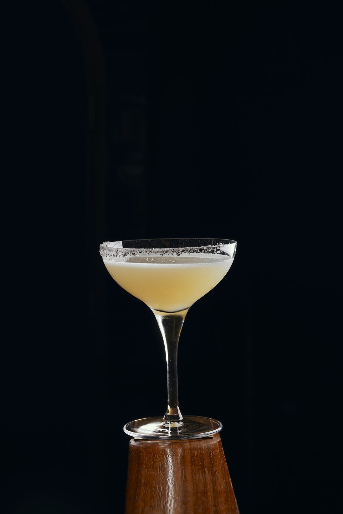

Ninety minutes of free-flowing drinks, a fire-cooked main and two tacos each. Not a light brunch. OpenTable Top 100 Brunch 2026.
Same food on both. The Ultimate adds wine and margaritas to the pour.



temper City near Bank runs its own Saturday brunch: oysters, scallop, prawn and dry-aged steak, with half a Cornish lobster on the £80 board. Ninety minutes of drinks, from £70.

"Bottomless brunch done properly. Not cheap prosecco. Actually good drinks and brilliant food."
"Steak for brunch, where else in Soho do you get this? The Ultimate package is worth it."
"Fire-cooked mains and ninety minutes of drinks. Our group stayed the full session."
Confirmed in seconds. Free to cancel. Parties of 8 or fewer via OpenTable; 9+ via DesignMyNight.
Parties of 9+ · Soho · City · Bar-B-Q & Crabshack · Opening list